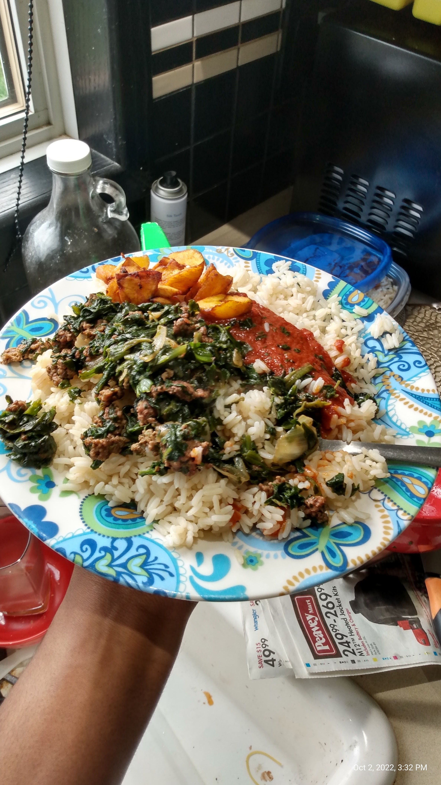

Spinach Rice (Spinirice)

Description
Spinach rice a.k.a spinirice is my own dish, and one of my overall
favourites. The name is a combination of the words "spinach" and "rice,"
and was influenced by the name of the Japanese dish omurice.
The main ingredeints of spinirice are rice, cooked spinach
and some form of meat.
Created in 2022 when I got tired of eating cheap spaghetti
and instant noodles, spinirice originated as an easy to make dish,
being comprised of whatever ingredients happened to be present
at the time of making it.
It may contain miscellaneous vegetables, meat scraps, and different
seasonings each time. Many of the ingredients are optional. This recipe
lists my ideal way to make it.
As long as it ends up tasting good there's no wrong way to make it.
Actually there is. Spinirice is to be eaten with a spoon alone, so everything
should be chopped into bits (chicken, beef, whathaveyou).
Ingredients
- Long grain parboiled rice
- Frozen chopped spinach
- Frozen mixed vegetables
- Onions
- Ground beef
- Dried crayfish
- Suya (optional | would require previous creation)
- Fire grilled chicken breast strips (optional)
- Eggs
- Oil
- Maggi seasoning cubes
- Maggi liquid seasoning (optional)
- Salt
- Cameroon pepper (Could possibly substitute akabanga)
- Special juice
Steps
- Wash and boil the long grain parboiled rice
- Chop up 1x onion and sautee with oil in a non-stick pot or pan on medium heat
- Add a chunk of ground beef to the pot and cook till cooked. mix it up.
- Remove the onion ground beef from the pot and put in a bowl. It will go back in later
- Microwave frozen spinach to thaw, and add, along with the mixed vegetables to the pot
- Add oil and allow to cook thoroughly on medium-high heat, stirring often
- Create a partition amoung the vegetables and add a little oil. Crack 1x egg in the middle and scramble. Add a pinch of salt if desired
- Mix together
- Crush 2x maggi cubes into the pot and mix in
- Taste, and add cameroon pepper to your desired pepperiness
- Add dried crayfish. Does wonders for the texture and taste
- Chop up suya and fire grilled chicken breast strips into bits and toss into the pot
- Add the onion ground beef back to the pot
- Mix it all together
- Serve on top of the rice, along with special juice